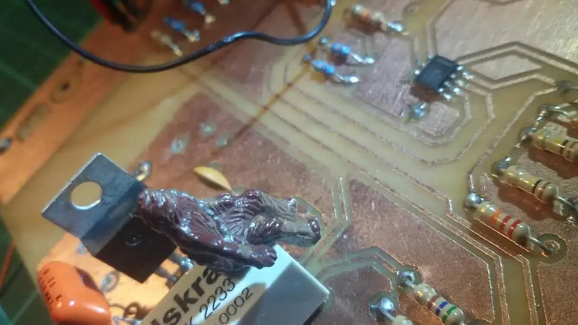

Chewbacca sobre un relay.
La ventaja principal de la carga electrónica, en comparación con las cargas fantasmas tradicionales, es que se puede regular dentro del rango de operación, pudiendo tomar cualquier valor, dentro de las características del dispositivo.
Para más detalles puedes leer el paper final del proyecto y ver la galería de imágenes: